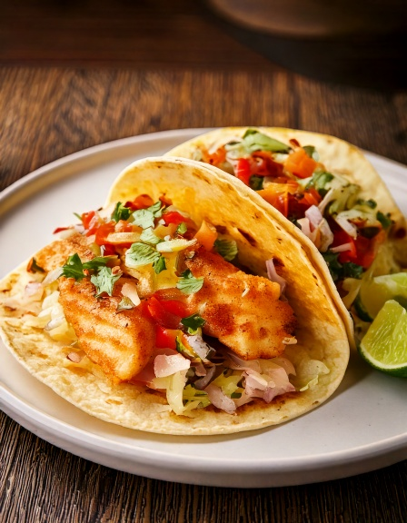

Baja-style grilled fish tacos na may cabbage slaw at light lime crema -- real Baja California street food, grilled hindi fried para mas light.
Nutrition (bawat serving)
290
Calories
26g
Carbs
28g
Protina
8g
Fat
4g
Fiber
~46
Est. GI
Bakit bagay ito sa diabetes-friendly na diyeta
Lean at mataas sa protein ang grilled white fish, halos walang carbs mismo, kaya galing sa corn tortilla ang karamihan ng carbs sa meal na ito -- moderate-GI na base na madaling i-portion.
Mga Sangkap
- 12 oz340 g white fish fillet (tilapia o cod)
- 1 tbsp15 ml lime juice
- 1 tsp5 ml chili powder
- 1/2 tsp2.5 ml cumin
- 4 small4 small maliit na corn tortilla
- 1 cup90 g shredded cabbage
- 2 tbsp30 ml plain Greek yogurt
- 1/4 cup60 g pico de gallo
Sa App
I-log ang mga meal tulad nito, awtomatikong ma-track ang carbs at glycemic index, at maghanap sa 3,700+ menu items mula sa 53 restaurant chains — libre sa GlucoBeacon app.
Paraan ng Paggawa
- Timplahan ang isda ng lime juice, chili powder, cumin, at asin.
- I-grill o pan-sear ang isda ng 3-4 minuto bawat side hanggang madaling matisod.
- Haluin ang Greek yogurt sa kaunting lime juice at asin para sa crema.
- Painitin ang tortilla sa dry pan o sa apoy.
- I-flake ang isda papunta sa tortilla, lagyan ng cabbage, pico de gallo, at crema sa ibabaw.